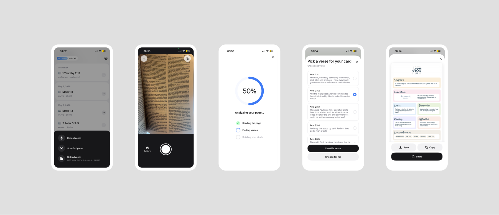

Open Sermon Keeper, tap Scan Scripture, snap a photo of any Bible page, pick which verse on that page you want studied. About thirty seconds later a study card opens — Scripture, word study, context, observation, meaning, application, cross-references, and a short prayer. Save it, copy it, share it. This post walks through the new scan-to-card feature, what each part of the card contains, and where it fits next to traditional SOAP journaling.
If you've ever sat down with a fresh notebook on Sunday afternoon and stared at the page trying to remember what the pastor said about Philippians 4 — this is built for you.
A Quick Refresher: What Is SOAP Bible Study?
SOAP is a four-step Bible study framework popularized by pastor Wayne Cordeiro. It's the most widely used journaling method in evangelical circles because it takes about ten minutes and turns passive reading into actual engagement with the text. The four letters stand for:
- S — Scripture. Write out the verse (or short passage) word for word. Slowing down to copy the text forces you to read it instead of skimming.
- O — Observation. What is actually happening in the text? Who is speaking, to whom, in what situation? What words repeat? What's the context of the chapter?
- A — Application. How does this apply to your life this week? Specific, not abstract. "Forgive my coworker by Friday," not "be more loving."
- P — Prayer. A short prayer in your own words, responding to what you just read.
The method works. The reason most people abandon it is friction: between reading, looking up cross-references, checking a concordance, and writing four sections, a single entry can take 20-30 minutes. After a busy week, that's enough to keep most journals empty.
How the Scan Feature Works
Four taps, start to finish:
- Tap Scan Scripture. From the main screen, the action sheet offers Record Audio, Scan Scripture, or Upload Audio. Pick the middle one.
- Take a photo of the page. Frame the open Bible in front of you and tap the shutter. You don't need to point at a single verse or trace anything on the page — a wide shot of the whole spread is fine.
- Pick the verse. The app shows you every verse it found on the page (for example, Acts 23:1, 23:2, 23:3...) with a snippet of each one. Tap the verse you want studied and hit Use this verse. If you can't decide, Choose for me picks one of the highlighted passages.
- Read the card. The card opens with eight sections — Scripture, Word study, Context, Observation, Meaning, Application, Cross-references, Prayer. From here you can Save it to your library, Copy it as text, or Share it.
From the shutter tap to the finished card the run is roughly half a minute — a "Reading the page → Finding verses → Building your study" progress screen keeps you company while it works. The card itself isn't editable inside the app — if it isn't quite what you wanted, scan again or pick a different verse from the page.

What's in a Study Card
Every card has eight sections, top to bottom:
| Section | What's in it |
|---|---|
| Scripture | The full verse text and reference, in the translation of the page you scanned |
| Word study | A key Greek or Hebrew word from the verse, with its root meaning and how it shapes the sense of the passage |
| Context | Where this verse sits in the chapter, who's speaking, what's happening around it |
| Observation | What the verse is actually saying in its own setting — before any application |
| Meaning | The point of the verse drawn out of context and observation |
| Application | A concrete way to live the verse this week |
| Cross-references | 3-5 related passages elsewhere in Scripture, listed by reference |
| Prayer | A short first-person prayer that responds to the verse — usually 1-2 sentences |
If you've used the classic SOAP method — Scripture, Observation, Application, Prayer — all four are here, with extra material (word study, context, meaning, cross-references) layered around them. The prayer at the bottom is meant as a starting point, not the final word: it's the one section you'll most likely want to rewrite in your own words during your own quiet time.
The Quieter Details
Works with any printed Bible
The scanner reads the verse reference on the page, not the translation's exact wording, so the same flow works for whatever Bible is in front of you. Tested with:
- English: KJV, NIV, ESV, NLT, NASB, CSB, NKJV
- Russian: Synodal Bible
- Spanish: Reina-Valera, NVI
An ESV in the morning and a Reina-Valera in the evening both work without changing settings. The Scripture printed on the card matches the translation of the page you scanned.
The photo stays on your phone
Text recognition happens locally, so the picture you took of the Bible page doesn't get uploaded anywhere. Only the verse reference itself (something like "Acts 23:2") leaves the device to fetch the study material. Your notes in the margins, the bookmark from your grandmother, the receipt you forgot to take out — all of that stays private to you.
It won't make up a verse
A reasonable worry with anything generated automatically is that it'll invent a verse that isn't really there. Two simple rules prevent that:
- The reference is checked first. If the page says "2 Hezekiah 4:11" or "John 3:99," the card never gets built — there's no such verse.
- Scripture comes from a verified Bible text. The verse printed on the card is pulled directly from a real, verified translation. It isn't paraphrased or rewritten.
The commentary sections (Observation, Meaning, Application) are short and grounded in the verified verse. They're not Scripture and they're not meant to replace a pastor or a study Bible — but you also won't open a saved card next week and find a fabricated quote.
English and Spanish
Scan a Spanish-language Bible and the whole card — Context, Observation, Meaning, Application, Cross-references — comes back in Spanish. The language is matched to the page you scanned.
Handwritten SOAP vs Scan: Honest Comparison
| Handwritten SOAP | Generic journaling app | Sermon Keeper scan | |
|---|---|---|---|
| Time to a finished entry | 20-30 min | 15-25 min | ~30 sec |
| Cross-references | Manual concordance lookup | Manual | Included |
| Greek/Hebrew word study | Separate book or app | Manual | Included |
| Works with any translation | Yes | Yes (you type it) | Yes (matches the page) |
| Prayer | You write it | You write it | Short draft included, editable in your own copy |
| Searchable later | No | Yes | Yes |
Who This Is Actually For
The scan feature is built for three kinds of users we kept hearing from:
Busy parents and professionals who want a daily quiet time but lose the habit when each entry takes half an hour. A card you can produce in thirty seconds keeps the journal alive even on a Monday morning before work.
New believers who don't yet know how to do their own observation or where to find cross-references. Each scanned card is a worked example — read it, copy the pattern, learn how the parts fit together.
Small group leaders preparing a weekly study who need a starting point for several passages without spending a full evening on lookup work.
The feature isn't built to replace your own reflection. The card hands you the research and the structure — the parts software is good at — and a starting-point prayer at the bottom. The card itself can't be edited inside the app, but copying it out to your own notes is one tap, and from there it's yours to rewrite, expand, or pray through in your own words.
Try the Scripture Scanner Free
Snap a photo of any Bible page, pick a verse, get a complete study card in about thirty seconds. Works with KJV, NIV, ESV, NLT, NASB, Synodal, Reina-Valera and more. 3 free cards to try it.
Download on App StoreFrequently Asked Questions
What is the SOAP method of Bible study?
SOAP stands for Scripture, Observation, Application, and Prayer — a four-step Bible study framework popularized by Wayne Cordeiro. You write out the verse, observe what's happening in the text, decide how to apply it to your life this week, and end with a short prayer. It turns passive reading into engagement.
Is there an app that creates a Bible study card from a photo?
Yes. Sermon Keeper's Scan Scripture feature lets you snap a photo of any open Bible page, pick which verse on the page you want studied (or tap "Choose for me"), and gives you a study card in about 30 seconds — with eight sections: Scripture, Word study, Context, Observation, Meaning, Application, Cross-references, and Prayer. You can save, copy, or share it.
Can I edit the card after the app creates it?
No. The card is finished when it's generated. You can save it to your library, copy it as text, or share it. If it's not what you wanted, the simplest thing is to scan again or pick a different verse from the page.
Does the photo of my Bible leave the phone?
No. Text recognition happens on your phone, so the picture stays local. Only the recognized verse reference (e.g., "Acts 23:2") is sent to generate the card.
Which Bible translations does the scanner work with?
Any translation. The scanner reads the verse reference, not the translation text, so KJV, NIV, ESV, NLT, NASB, CSB, NKJV, the Russian Synodal Bible, and Reina-Valera all work. As long as the page shows a recognizable reference, the app can identify the passage.
Can the app make up a verse that does not exist?
No. The verse on the card comes from a verified Bible text, not from generated text. The reference is also checked against the standard 66-book structure first, so impossible references like "John 3:99" are rejected.
Does the scan feature work in Spanish?
Yes. The feature is bilingual — English and Spanish. Scan a Reina-Valera or NVI page and the whole card (Context, Observation, Meaning, Application, Prayer) comes back in Spanish.
Is the Prayer step of SOAP included?
Yes. The card ends with a short first-person prayer responding to the verse — usually 1-2 sentences. Treat it as a starting point: it's the section most people end up rewriting in their own words during their own quiet time.
Start Free with Sermon Keeper
Snap any Bible page, get a complete study card in about thirty seconds. Any translation, English & Spanish, photo stays on your phone. 3 free cards included.
Download on App Store